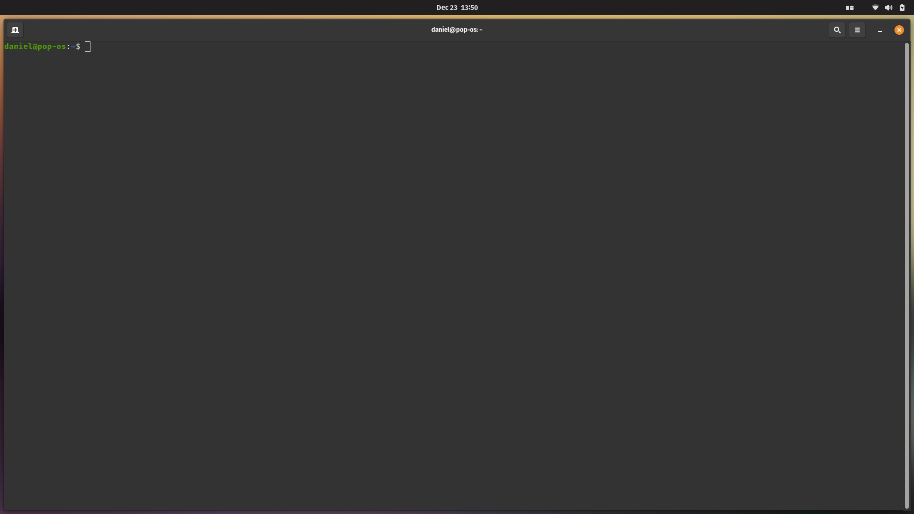
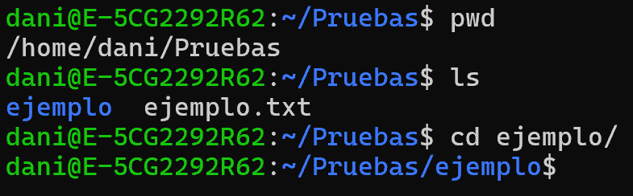
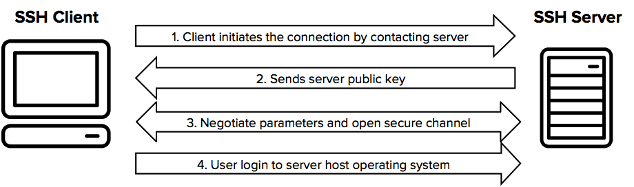
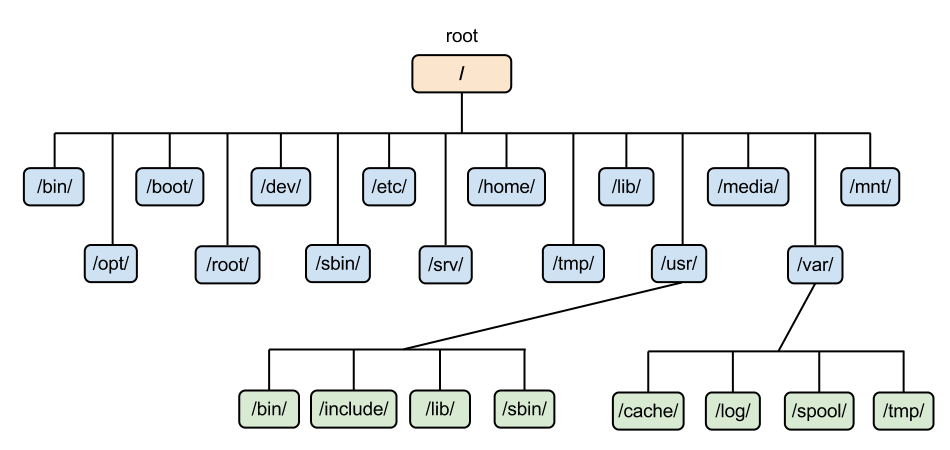
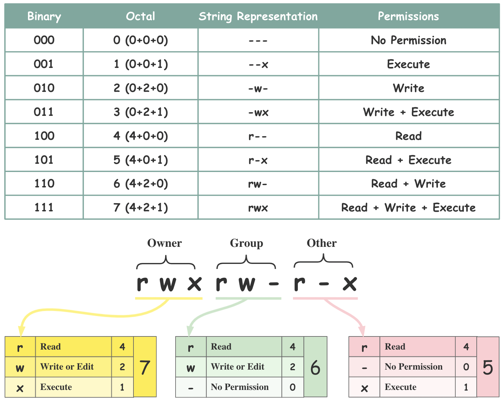

Fundamentos
Este capítulo presenta los conceptos esenciales del sistema GNU/Linux, el funcionamiento de la terminal como interfaz principal de interacción, los comandos fundamentales para la navegación y la manipulación del sistema de archivos, el modelo de usuarios y permisos, la gestión de procesos y servicios, y las herramientas básicas de automatización y red.
Bibliografía¶
- NetworkChuck. (2023). 60 comandos de Linux que NECESITAS saber (en 10 minutos) [Vídeo]. YouTube. https://www.youtube.com/watch?v=gd7BXuUQ91w
- DeciLearn. (2023). Linux Para Principiantes - Curso completo [Vídeo]. YouTube. https://youtu.be/jVQKk8IB9pA
Introducción¶
Linux no es un sistema operativo completo, sino un kernel de software libre desarrollado inicialmente por Linus Torvalds. Su código fuente es público y accesible, lo que permite a cualquier persona examinarlo, modificarlo, contribuir a su desarrollo o crear su propia distribución.
El kernel de Linux se combina con las utilidades del proyecto GNU, que aportan las herramientas esenciales del entorno de usuario, como compiladores, intérpretes de comandos y bibliotecas básicas. Por esta razón, la denominación más precisa para referirse al sistema es GNU/Linux.
GNU/Linux se caracteriza por ser una plataforma robusta, segura y flexible, capaz de adaptarse tanto a entornos personales como a infraestructuras críticas, incluyendo servidores y sistemas embebidos. Esta versatilidad lo ha convertido en la base de los sistemas operativos más utilizados en entornos distribuidos y plataformas en la nube, aunque también encuentra un lugar destacado en el ámbito doméstico.
El modelo de desarrollo abierto, sustentado por una comunidad global de desarrolladores y usuarios, facilita una evolución constante, con mejoras continuas en rendimiento, estabilidad y seguridad. Esta diversidad se manifiesta en la existencia de múltiples proyectos que integran el kernel con diferentes herramientas, entornos gráficos y gestores de paquetes. Cuando estos componentes se combinan con configuraciones específicas se obtiene una distribución. Ejemplos representativos como Ubuntu, Debian, Fedora o Arch Linux ilustran cómo un mismo núcleo puede ajustarse a contextos de uso muy distintos.
La terminal¶
La interacción directa con el sistema se realiza principalmente a través de la terminal o shell, un intérprete de comandos que traduce las órdenes del usuario en acciones ejecutables. Aunque existen alternativas modernas, Bash se mantiene como la shell más extendida y estandarizada.

Los comandos disponibles en la terminal presentan una sintaxis basada en un nombre principal, un conjunto de opciones que modifican su comportamiento y una serie de argumentos que especifican el objetivo de la acción.
Anatomía de un comando
El comando ls -l /home/usuario combina el nombre principal ls, que lista los
archivos y directorios, con la opción -l, que indica que la información se muestre
en formato detallado, y el argumento /home/usuario, que especifica la ubicación
del directorio cuyo contenido se desea visualizar.
El propio sistema facilita la consulta y el aprendizaje mediante documentación
integrada. Herramientas como man, help o type permiten comprender el
funcionamiento interno de los comandos y distinguir entre utilidades externas, funciones
internas o alias definidos por el usuario.
Los manuales se encuentran organizados en secciones que agrupan la información según su naturaleza, lo que permite acceder de manera más precisa a la documentación. Las secciones más comunes son las siguientes:
- Comandos de usuario: Incluye programas ejecutables y comandos que pueden
invocarse desde la shell. Ejemplo:
ls,cp. - Llamadas al sistema: Documenta las funciones proporcionadas por el kernel que
permiten a los programas interactuar con el sistema operativo. Ejemplo:
open(),read(). - Funciones de biblioteca: Contiene funciones disponibles en bibliotecas estándar,
como la biblioteca C (
libc). Ejemplo:printf(),malloc(). - Archivos especiales y dispositivos: Describe archivos del sistema y dispositivos
especiales ubicados en
/devu otras rutas del sistema de archivos. Ejemplo:/dev/null. - Formatos de archivo y convenciones: Incluye descripciones de formatos de archivo,
convenciones de configuración y estructuras de datos. Ejemplo:
/etc/passwd. - Juegos y diversiones: Contiene documentación sobre juegos, ejemplos o programas de entretenimiento incluidos en el sistema.
- Miscelánea: Agrupa temas varios, convenciones, estándares o programas que no encajan en otras secciones.
- Comandos de administración del sistema: Incluye comandos reservados para la
administración y configuración del sistema, normalmente accesibles solo por el
superusuario (
root). Ejemplo:mount,passwd.
Al consultar un manual es posible especificar la sección deseada para acceder directamente a la información relevante.
Secciones del manual
El comando man 2 open muestra la documentación de la llamada al sistema open(),
mientras que man 1 open se refiere al comando de usuario homónimo.
No todos los comandos cuentan con una sección específica en el manual. En algunos casos, la información solo está disponible a través de otras herramientas de ayuda o de documentación externa.
Comandos básicos¶
La interacción cotidiana con el sistema se apoya en un conjunto de comandos fundamentales que permiten administrarlo, navegar por su estructura de directorios y manipular información.
Entre ellos, pwd indica el directorio de trabajo actual, ls permite explorar el
contenido de los directorios mostrando información detallada, permisos o archivos
ocultos, y cd posibilita el desplazamiento entre directorios.

La creación de elementos básicos se realiza con touch para archivos y mkdir para
directorios. La lectura de archivos puede efectuarse mediante cat, adecuada para
contenidos breves, o less, que permite una navegación paginada en textos extensos. La
gestión de archivos y directorios se completa con cp para copiar, mv para mover o
renombrar, y rm o rmdir para eliminar elementos.
La administración básica también incluye utilidades como whoami, que identifica al
usuario activo, useradd, que crea nuevas cuentas, y wget, que descarga recursos
desde la red.
rm no envía nada a la papelera
A diferencia de los gestores de archivos gráficos, rm elimina de forma inmediata y
definitiva, sin paso intermedio por ninguna papelera. La combinación rm -rf, que
borra de manera recursiva y sin pedir confirmación, es la forma más rápida de
destruir un directorio completo por error, especialmente si la ruta se construye a
partir de una variable que puede estar vacía.
Conviene comprobar la ruta antes de ejecutar la orden, por ejemplo listándola con
ls, y emplear rm -i cuando se borre de forma interactiva. Para trabajar con una
papelera real existen utilidades como trash-cli.
Otro de los flujos de trabajo más habituales, tanto en entornos corporativos como en servidores domésticos, es el acceso remoto a otros equipos. Este acceso se realiza mediante el protocolo SSH (Secure Shell), que permite establecer sesiones seguras desde la línea de comandos e integrar de manera fluida la administración de sistemas locales y remotos.

Los comandos anteriores cubren la mayor parte de las tareas cotidianas, aunque el catálogo real es mucho más amplio y el comportamiento de cada comando puede alterarse mediante sus opciones. Enumerar todos los comandos del sistema junto con sus múltiples opciones resulta impracticable debido a su cantidad y diversidad.
Por esta razón, la opción --help está disponible en prácticamente cualquier comando y
proporciona información detallada sobre su uso, las opciones admitidas y una breve
descripción de su funcionalidad. También existen recursos externos como la documentación
oficial o los motores de búsqueda, aunque explorar el propio sistema resulta igualmente
enriquecedor, preferiblemente en un entorno controlado como una máquina virtual.
La siguiente tabla recopila los comandos de uso más frecuente:
| Comando | Descripción | Ejemplo de uso |
|---|---|---|
pwd |
Muestra el directorio de trabajo actual. | pwd |
ls |
Lista el contenido de directorios, mostrando información detallada y archivos ocultos. | ls -la /home/usuario |
cd |
Cambia el directorio de trabajo. | cd /var/log |
touch |
Crea archivos vacíos. | touch archivo.txt |
mkdir |
Crea nuevos directorios. | mkdir proyecto |
cat |
Muestra el contenido de archivos pequeños. | cat archivo.txt |
less |
Visualiza archivos largos de forma paginada. | less archivo_grande.txt |
cp |
Copia archivos o directorios. | cp archivo.txt /home/usuario/backup/ |
mv |
Mueve o renombra archivos o directorios. | mv archivo.txt documento.txt |
rm |
Elimina archivos. | rm archivo.txt |
rmdir |
Elimina directorios vacíos. | rmdir carpeta_vacia |
whoami |
Muestra el usuario activo. | whoami |
useradd |
Crea nuevas cuentas de usuario. | sudo useradd nuevo_usuario |
passwd |
Cambia la contraseña de un usuario. | passwd usuario |
man |
Accede a la documentación integrada de los comandos. | man ls |
wget |
Descarga archivos desde la red. | wget https://ejemplo.com/archivo.zip |
ssh |
Establece un acceso remoto seguro a otros equipos. | ssh usuario@192.168.1.10 |
chmod |
Modifica los permisos de archivos y directorios. | chmod 755 script.sh |
chown |
Cambia el propietario de archivos o directorios. | chown usuario:grupo archivo.txt |
find |
Busca archivos y directorios según criterios específicos. | find /home -name "*.txt" |
grep |
Busca cadenas de texto dentro de archivos. | grep "error" log.txt |
tar |
Comprime o descomprime archivos y directorios. | tar -czvf backup.tar.gz /home/usuario |
zip |
Comprime archivos y directorios en formato ZIP. | zip -r nombre.zip nombre_carpeta |
unzip |
Descomprime archivos en formato ZIP. | unzip nombre.zip |
df |
Muestra el espacio disponible en los sistemas de archivos. | df -h |
du |
Muestra el tamaño de archivos y directorios. | du -sh /home/usuario |
top |
Muestra los procesos en ejecución y el uso de recursos en tiempo real. | top |
ps |
Lista los procesos en ejecución. | ps aux |
kill |
Envía una señal a un proceso identificado por su identificador (PID). | kill -15 1234 |
Estructura de directorios¶
El almacenamiento se organiza siguiendo una estructura jerárquica unificada en forma de
árbol cuyo origen se encuentra en el directorio raíz (/).
A diferencia de otros sistemas operativos, no existen unidades identificadas por letras. Todos los dispositivos de almacenamiento se incorporan a esta jerarquía mediante el proceso de montaje.

Dentro de esta estructura destacan una serie de directorios esenciales:
/boot: Alberga los componentes necesarios para el arranque del sistema, incluidos el kernel y el gestor GRUB, el programa que se muestra al iniciar el equipo y que permite seleccionar el sistema operativo cuando existen varias instalaciones./etc: Concentra los archivos de configuración en formato de texto plano, que determinan el comportamiento del sistema y de sus servicios./biny/sbin: Contienen los ejecutables imprescindibles para la operación básica y la administración del sistema./home: Contiene los espacios de trabajo de los usuarios, mientras que/rootse reserva exclusivamente para el superusuario./var: Almacena datos variables como registros (logs), colas y bases de datos./dev,/procy/sys: Proporcionan representaciones virtuales del hardware y del estado interno del kernel, lo que permite un acceso sistemático y controlado a los recursos del sistema.
Uno de los directorios más visitados, de manera directa o indirecta, es el directorio
oculta ~/.cache, que almacena datos temporales generados por diversas aplicaciones
para acelerar operaciones posteriores. En esta ubicación, las herramientas de gestión de
dependencias mantienen sus propios directorios de caché, donde guardan paquetes
descargados, compilaciones intermedias y metadatos. Ejemplos representativos son
~/.cache/uv para el gestor de paquetes uv de Python o ~/.cache/pip para pip.
Con el tiempo, estos directorios de caché pueden acumular un volumen considerable de
datos. Para identificar qué directorios consumen más espacio en disco resulta útil el
comando du con opciones que limitan la profundidad de exploración.
Comprobar el espacio ocupado por directorios
Para visualizar el tamaño de cada subdirectorio inmediato dentro del directorio personal del usuario:
Este comando muestra el espacio ocupado por cada directorio en formato legible (-h
de human-readable), limitando la exploración a un solo nivel de profundidad.
Resulta especialmente práctico para detectar directorios de caché que han crecido de
forma descontrolada y que pueden limpiarse sin afectar al funcionamiento del
sistema.
Usuarios y grupos¶
GNU/Linux es un sistema multiusuario en el que la seguridad y el control de acceso se articulan mediante un modelo basado en usuarios, grupos y permisos. Este enfoque permite que múltiples personas trabajen simultáneamente en el mismo sistema sin interferir entre sí, y garantiza al mismo tiempo la protección de los recursos y la estabilidad del entorno.
Los permisos no se asignan únicamente a individuos, sino que también se agrupan mediante grupos, que actúan como conjuntos de privilegios compartidos, de forma similar a una plantilla de privilegios.
Cada usuario dispone de un grupo primario, asociado por defecto a los archivos que
crea, y puede pertenecer a varios grupos secundarios que amplían sus capacidades,
como ocurre con el grupo sudo, destinado a la ejecución controlada de tareas
administrativas.
Permisos¶
Cada archivo o directorio define privilegios de lectura, escritura y ejecución para tres categorías claramente diferenciadas: el propietario, el grupo asociado y el resto de usuarios, denominados otros. Esta última categoría representa a cualquier usuario que no sea el propietario del archivo ni miembro del grupo asociado.
Este esquema limita el acceso indebido a los recursos. Por encima de estas restricciones
se sitúa el superusuario, identificado como root, que posee control total sobre el
sistema y puede ignorar el modelo de permisos convencional.
El sistema evalúa los permisos siguiendo un orden de prioridad estricto. Primero comprueba si el usuario es el propietario, en cuyo caso aplica los permisos correspondientes. Si no lo es, verifica si pertenece al grupo y, solo cuando no se cumple ninguna de estas condiciones, se aplican los permisos definidos para otros.

Los permisos se visualizan habitualmente mediante el comando ls -l, que muestra una
cadena simbólica como rwxr-xr--. Esta notación agrupa los permisos en tres bloques de
tres caracteres, correspondientes al propietario, al grupo y a otros, respectivamente.
Cada carácter indica si el permiso de lectura (r), escritura (w) o ejecución (x)
está concedido. Cuando un permiso no está habilitado, se sustituye por un guion.
Los permisos significan otra cosa en un directorio
Sobre un archivo, r permite leer su contenido, w modificarlo y x ejecutarlo.
Sobre un directorio el significado cambia: r permite listar los nombres que
contiene, w permite crear, renombrar y borrar entradas dentro de él, y x permite
atravesarlo para acceder a lo que hay debajo.
De ahí se derivan dos consecuencias que suelen sorprender. Un directorio con r
pero sin x permite ver los nombres de los archivos pero no abrirlos. Y el permiso
w sobre un directorio basta para borrar un archivo que hay dentro, aunque ese
archivo pertenezca a otro usuario y no conceda permiso de escritura.
Interpretar permisos con ls -l
Al ejecutar ls -l sobre un archivo se obtiene una cadena de permisos como la
siguiente:
La cadena se divide en bloques de tres caracteres (rwx, r-x y r--) que
representan los permisos del propietario, del grupo y de los demás usuarios:
| Permiso | Propietario | Grupo | Otros |
|---|---|---|---|
| Lectura (r) | ✔ | ✔ | ✔ |
| Escritura (w) | ✔ | ✖ | ✖ |
| Ejecución (x) | ✔ | ✔ | ✖ |
En este contexto:
- Propietario: Tiene permisos completos sobre el archivo, por lo que puede leer su contenido, modificarlo y ejecutarlo si se trata de un archivo ejecutable.
- Grupo: Posee permisos de lectura y ejecución, lo que le permite abrir y ejecutar el archivo, pero no modificarlo.
- Otros: Solo cuentan con permiso de lectura, por lo que pueden consultar el contenido del archivo, pero no ejecutarlo ni realizar cambios sobre él.
Siguiendo la misma lógica, r-- indica que únicamente se permite la lectura,
mientras que rw- permite lectura y escritura, pero no ejecución.
Modificación de permisos¶
Los permisos de archivos y directorios se modifican con el comando chmod, que admite
dos notaciones principales, la octal y la simbólica.
En la notación octal, cada permiso tiene un valor numérico fijo, donde la lectura equivale a 4, la escritura a 2 y la ejecución a 1. La suma de estos valores determina el permiso final para cada categoría. El comando recibe siempre tres dígitos que representan de izquierda a derecha los permisos del propietario, del grupo y de otros.
Notación octal
Al aplicar chmod 754 archivo, cada dígito resulta de sumar los valores de los
permisos concedidos. El propietario obtiene el valor 7 (4 + 2 + 1), lo que equivale
a lectura, escritura y ejecución. El grupo recibe el valor 5 (4 + 1), es decir,
lectura y ejecución, pero no escritura. El resto de usuarios obtiene el valor 4, que
corresponde únicamente a lectura.
Por otra parte, la notación simbólica utiliza letras para identificar a los sujetos, u
para el propietario, g para el grupo, o para otros y a para todos, además de
emplear operadores para añadir, quitar o asignar permisos.
Notación simbólica
- Añadir permisos de ejecución a todos:
chmod a+x backup.sh. El operador+suma el permiso de ejecución (x) a todas las categorías (ade all). - Dar acceso de lectura al grupo:
chmod g+r backup.sh. Únicamente el grupo (g) recibe el atributo de lectura (r). - Retirar permisos de escritura a otros:
chmod o-w backup.sh. El operador-garantiza que cualquier permiso de escritura previo para terceros sea revocado, sin alterar los permisos del propietario o del grupo. - Asignación exacta de permisos:
chmod g=rx backup.sh. El operador=establece que el grupo tenga lectura y ejecución, y elimina de una sola vez cualquier otro permiso previo, como el de escritura.
El comando umask define los permisos por defecto de los nuevos archivos y
directorios. Mientras que chmod modifica permisos existentes, umask actúa como una
máscara que restringe los permisos máximos iniciales.
Para los archivos, el sistema parte de un valor máximo de lectura y escritura para todos
y, para los directorios, de permisos completos. El valor de umask indica qué permisos
deben eliminarse automáticamente, de modo que cuanto más restrictiva sea la máscara, más
limitados serán los permisos resultantes.
Máscara umask
Con una máscara umask de 022:
- Archivo nuevo: El sistema parte de los permisos máximos
rw-rw-rw-(lectura y escritura para todos). La máscara elimina los permisos de escritura para el grupo y para otros, por lo que el archivo se crea con permisos finalesrw-r--r--. - Directorio nuevo: El sistema parte de permisos máximos
rwxrwxrwx(lectura, escritura y ejecución para todos). Al aplicar la misma máscara se eliminan los permisos de escritura para el grupo y para otros, lo que resulta en permisos finalesrwxr-xr-x.
Propiedad de archivos¶
Además de los permisos, cada archivo y directorio posee un propietario y un grupo que determinan quién ejerce la autoridad principal sobre él.
El comando chown permite modificar esta propiedad, definiendo quién es el dueño y a
qué grupo pertenece un recurso. A diferencia de chmod, que puede ser utilizado por el
propietario del archivo para ajustar sus permisos, chown requiere privilegios
administrativos, ya que cambiar la propiedad implica transferir el control efectivo del
recurso.
Este comando permite modificar únicamente el usuario propietario, solo el grupo o ambos de forma simultánea, y puede aplicarse de manera recursiva a directorios completos.
Cambiar propietario con chown
Para asignar la propiedad de un directorio llamado proyecto al usuario ana:
Tras ejecutar el comando, ana es la propietaria del directorio, mientras que el
grupo permanece sin cambios. Para cambiar solo el grupo a desarrolladores:
El propietario actual se mantiene, pero el grupo asociado pasa a ser
desarrolladores. Para cambiar el propietario y el grupo de forma simultánea:
Por último, para aplicar los cambios de manera recursiva a todos los archivos y
subdirectorios contenidos en proyecto:
Alcance de los cambios recursivos con sudo
La opción -R aplica el cambio a todo el árbol de directorios, y sudo elimina
cualquier restricción que hubiera impedido hacerlo. Un error en la ruta puede dejar
inservible una parte del sistema, y ejecutar sudo chown -R sobre / o sobre
/usr obliga en la práctica a reinstalar.
La precaución básica consiste en usar rutas relativas desde el directorio correcto, o rutas absolutas escritas por completo, y nunca una variable sin comprobar que tiene valor.
Procesos y servicios¶
Un proceso es un programa en ejecución. Cuando un usuario inicia un programa, el sistema operativo carga el archivo binario en memoria, asigna los recursos necesarios y lo transforma en un proceso activo.
Cada proceso es gestionado por el kernel y recibe un identificador único denominado
PID (Process ID). Todos los procesos forman una jerarquía cuyo origen es el
proceso con PID 1, gestionado actualmente por systemd, que arranca junto al
kernel y actúa como ancestro de todos los demás. Cuando un programa lanza otro, como
ocurre cuando la terminal ejecuta ls, el primero actúa como proceso padre y el segundo
como proceso hijo.
Además del PID, cada proceso registra el PPID (Parent Process ID), que identifica al proceso que lo creó, y el UID (User ID), que indica el usuario que lo ejecuta y determina sus permisos sobre los archivos y los recursos del sistema.
A lo largo de su ciclo de vida, un proceso puede encontrarse en distintos estados, que van desde la ejecución activa hasta la espera o la finalización:
| Estado | Código | Descripción |
|---|---|---|
| Running | R |
En ejecución o listo para ejecutarse. |
| Sleeping | S |
Esperando un evento, como una entrada del usuario o una lectura de disco. |
| Sleeping | D |
En espera ininterrumpible, asociada normalmente a operaciones de entrada y salida. |
| Stopped | T |
Pausado, por ejemplo mediante Ctrl + Z. |
| Zombie | Z |
Finalizado, pero sin que su proceso padre haya registrado la finalización. |
El estado y el consumo de recursos de los procesos pueden supervisarse mediante
herramientas como ps, top o htop, que permiten analizar su comportamiento en
tiempo real.
Señales¶
Las señales son mecanismos que permiten comunicar eventos a un proceso en ejecución. Funcionan como mensajes que pueden solicitar la terminación, la pausa, la reanudación o la recarga de la configuración de un proceso. Las señales más utilizadas son las siguientes:
| Señal | Nombre | Número | Función |
|---|---|---|---|
SIGTERM |
Terminate | 15 | Solicita al proceso que cierre de manera ordenada. |
SIGKILL |
Kill | 9 | Fuerza la terminación inmediata del proceso, sin posibilidad de reacción. |
SIGHUP |
Hangup | 1 | Solicita la recarga de la configuración de los daemons. |
SIGSTOP |
Stop | 19 | Pausa el proceso sin liberarlo de la memoria. |
SIGCONT |
Continue | 18 | Reanuda un proceso previamente detenido. |
El comando kill envía estas señales a procesos concretos identificados por su PID.
Cuando el PID no se conoce, pkill permite operar directamente sobre el nombre del
proceso. Los usuarios solo pueden enviar señales a sus propios procesos, de modo que
interactuar con procesos de otros usuarios o del sistema requiere privilegios de
superusuario mediante sudo.
El teclado también genera señales durante la ejecución de un proceso en primer plano. La
combinación Ctrl + C envía SIGINT e interrumpe la ejecución del proceso activo,
mientras que Ctrl + Z envía SIGTSTP, pausa el proceso y lo traslada al segundo
plano, desde donde puede reanudarse con fg.
Finalizar procesos por PID y por nombre
La forma estándar de kill envía la señal SIGTERM, que permite al proceso
finalizar de manera ordenada liberando sus recursos:
Si el proceso no responde a SIGTERM, es posible forzar su terminación inmediata
mediante SIGKILL:
Cuando un proceso de Python se queda bloqueado o sin responder, como ocurre con
frecuencia con notebooks de Jupyter o scripts de larga duración, resulta
práctico utilizar pkill para finalizar todos los procesos asociados a un nombre
determinado sin necesidad de conocer sus PID individuales:
kill -9 y pkill actúan sin contemplaciones
La señal SIGKILL, que kill -9 envía, no puede ser interceptada por el proceso,
de modo que este termina sin ejecutar su rutina de cierre. El resultado puede ser
trabajo sin guardar, archivos a medio escribir o bloqueos que quedan sin liberar.
Conviene intentar primero kill -15, que envía SIGTERM y permite al proceso
terminar de forma ordenada, y reservar SIGKILL para cuando no responda.
pkill python es más peligroso de lo que parece, porque termina todos los
procesos cuyo nombre coincida, incluidos los que no se pretendía tocar. Conviene
comprobar antes qué se va a eliminar con pgrep -a python, y acotar el alcance con
pkill -u $USER para limitarlo a los procesos del usuario actual.
Ejecución persistente de procesos¶
En entornos de desarrollo y producción es frecuente la necesidad de mantener procesos en
ejecución incluso después de cerrar la sesión del terminal. Cuando un usuario cierra su
sesión, el sistema envía la señal SIGHUP a todos los procesos asociados a dicha
sesión, lo que provoca su terminación.
El comando nohup (no hang up) permite ignorar esta señal, lo que garantiza que
el proceso continúe ejecutándose de forma independiente de la sesión del usuario. La
salida estándar y la salida de error se redirigen automáticamente al archivo nohup.out
en el directorio de trabajo actual.
Mantener un proceso activo tras cerrar sesión
Para ejecutar un script de Python que debe permanecer activo de forma indefinida, incluso si se cierra la terminal o finaliza la conexión SSH:
El símbolo & al final envía el proceso al segundo plano y libera la terminal para
continuar trabajando. La combinación de nohup con & resulta idónea para tareas
de larga duración, como entrenamientos de modelos de aprendizaje automático o
procesamiento masivo de datos.
Daemons¶
Los daemons son procesos diseñados para ejecutarse en segundo plano de manera continua, sin depender de la sesión de un usuario. Proporcionan servicios permanentes como servidores web, acceso remoto por SSH o tareas programadas.
A diferencia de los procesos interactivos, los daemons se desvinculan de su terminal
original y son adoptados por systemd, lo que garantiza su ejecución continua incluso
cuando el usuario que los inició cierra su sesión.
Por convención, muchos daemons tienen nombres terminados en d, como sshd para la
gestión de conexiones SSH, httpd o apache2 para el servicio web, crond para las
tareas programadas y systemd para el control de servicios y procesos del sistema. Por
razones de seguridad, los daemons no deben ejecutarse como root salvo que sea
estrictamente necesario.
El control de los daemons se realiza mediante systemctl, que permite iniciar,
detener, reiniciar y habilitar servicios de manera uniforme:
| Comando | Descripción |
|---|---|
sudo systemctl start sshd |
Inicia el daemon y crea el proceso correspondiente. |
sudo systemctl stop sshd |
Detiene el daemon. |
sudo systemctl status sshd |
Muestra el estado, el PID y el consumo de recursos del daemon. |
sudo systemctl enable sshd |
Configura el daemon para que se inicie automáticamente al arrancar el sistema. |
Alias y atajos de comandos¶
La eficiencia operativa se potencia mediante la automatización de tareas repetitivas o complejas a través de la shell. Una herramienta fundamental para este propósito son los alias, que funcionan como atajos para comandos largos o de uso frecuente. Los alias permiten reducir errores, ahorrar tiempo y estandarizar procedimientos dentro del entorno de trabajo.
Los alias se configuran generalmente en los archivos de inicialización de la shell,
como ~/.bashrc o ~/.zshrc, lo que asegura que estén disponibles de manera automática
en cada nueva sesión.
Alias para comandos frecuentes
El alias alias ll='ls -alF' convierte un comando largo y detallado en una
instrucción breve y fácil de recordar.
La recarga inmediata de estos archivos mediante source ~/.bashrc aplica los cambios
sin necesidad de cerrar la sesión, lo que mantiene la continuidad del trabajo.
Más allá de los alias, el sistema ofrece mecanismos de automatización más completos, como los scripts de Bash y los Make, que permiten encadenar secuencias de comandos y reutilizarlas como tareas con nombre específicos.
Gestión de red y puertos¶
En entornos de desarrollo y de administración de sistemas es habitual inspeccionar el estado de la red, identificar qué puertos están en uso o verificar la conectividad con servicios remotos. Estas tareas se apoyan en un conjunto reducido de herramientas que, en muchas distribuciones, no se encuentran instaladas por defecto.
Inspección de red y puertos
Instalación de las herramientas necesarias:
Una vez instaladas, es posible listar todos los puertos TCP activos en el sistema:
Para localizar el proceso que está utilizando un puerto específico, como el 9000:
Por último, para comprobar la conectividad con un servicio concreto mediante Telnet se indican la dirección y el puerto de destino:
Alternativa moderna a netstat
El paquete net-tools se considera obsoleto en las distribuciones actuales. El
comando ss, incluido en iproute2, ofrece la misma información de forma más
rápida y detallada. Por ejemplo, ss -tulnp lista los puertos TCP y UDP en escucha
junto con el proceso asociado a cada uno.
Con el sistema operativo cubierto, el módulo de herramientas de desarrollo continúa con Git para el control de versiones, y con Bash y Make para automatizar las tareas que aquí se han ejecutado de forma manual.